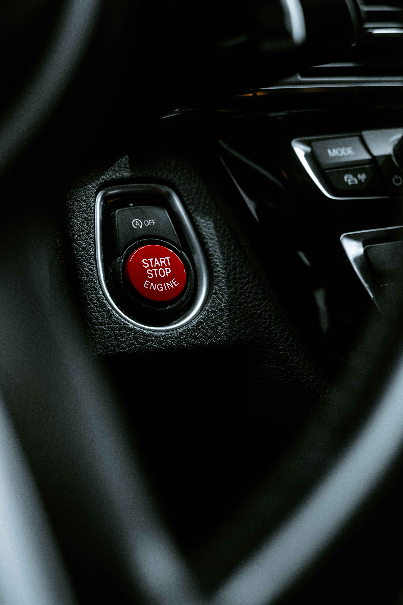

Home / Diagnostics
Car Cranks But Won't Start: Causes and Checks
Quick answer
If the engine turns over normally but never fires, it's missing fuel, spark or air, or the car's security system is blocking it. Check the dashboard for a flashing security light, make sure there's fuel, listen for the fuel pump when you switch the ignition on and read any stored codes. Don't keep cranking for more than about 10 seconds at a time.

Cranks but won't start, or just clicks?
These are two different problems. If the engine turns over at a healthy speed (a steady 'rrr-rrr-rrr') but doesn't fire, this guide applies. If you only hear clicking, or the engine turns very slowly, the battery or starter is more likely. See Car Clicks But Won't Start: Battery or Starter? and How to Test a Car Battery With a Multimeter.
What an engine needs to start
A petrol or diesel engine needs air, fuel, a spark (petrol) or enough compression heat (diesel) and a correct signal from its sensors, all at the right time. When it cranks but won't start, one of these is missing.
| Missing | Typical causes | Clue |
|---|---|---|
| Fuel | Empty tank, failed fuel pump, blocked filter, fuel pump relay or fuse | No pump hum when ignition goes on |
| Spark | Worn plugs, failed coils, ignition module. See How to Change Spark Plugs | Smell of fuel, no firing at all |
| Air | Blocked intake or very dirty filter. See Engine Air Filter | Rare on its own |
| Sensor signal | Crankshaft or camshaft position sensor | Rev counter doesn't move while cranking |
| Security system | Immobilizer, key battery, key not recognised | Flashing key or lock light on dash |
| Flooded engine | Too much fuel from repeated cranking | Strong petrol smell |
What to check first
- Look at the dashboard. A flashing security or key light means the immobilizer may be blocking the start. Try the spare key.
- Check the fuel level. A faulty gauge can mislead you.
- Turn the ignition on without cranking and listen for a brief hum from the fuel tank area.
- Check for warning lights and read stored codes with an OBD-II reader. See Check Engine Light: Flashing vs Steady.
- Check that the battery voltage is good, since low voltage can cause odd behaviour. If it's weak, see How to Jump-Start a Car Safely.
- Check fuses and relays for the fuel pump and ignition using your manual.
Safety note. Fuel is flammable. Don't smoke or use open flames near the car, and avoid spraying starter fluid into modern engines, as it can cause damage. Keep hands away from belts and fans.
If you smell fuel
A strong smell of petrol after several long attempts can mean the engine is flooded. Wait about 10 to 15 minutes, then try again without touching the throttle (check your manual for the correct procedure). If the smell persists with no start, or you see a fuel leak, stop trying and call for help.
Diesel-specific causes
- Glow plug or glow plug relay fault in cold weather
- Air in the fuel system after running out of fuel or changing a filter
- Waxed fuel in very cold weather
- Failed fuel pump or injector issues
When to call for help
If basic checks don't solve it, avoid draining the battery with repeated attempts. A roadside service or garage can scan for codes and test the fuel pressure. Once it's running, note what happened. A pattern, such as 'only when hot', helps diagnosis. See also Rough Idle: Causes and What to Check First for related symptoms.
FAQ
Why does my car crank but not start?
It's missing fuel, spark, air or a sensor signal, or the immobilizer is blocking it. Start with the dashboard lights, the fuel level and the pump sound.
Can a bad battery cause a crank-no-start?
A weak battery usually causes slow cranking or clicking, but low voltage can also upset sensors and fuel delivery.
Can a bad crankshaft sensor cause this?
Yes. If the engine can't tell where the crankshaft is, it may not fire. The rev counter often stays at zero while cranking.
How long should I crank the engine?
No more than about 10 seconds at a time, with a pause between attempts to protect the starter and battery.
Could it be the fuel pump?
Yes, especially if you hear no hum when the ignition goes on. A relay or fuse can also be the cause.
This guide is general information, not professional advice. Check your own vehicle's manual for exact specs and read the disclaimer before starting any job.